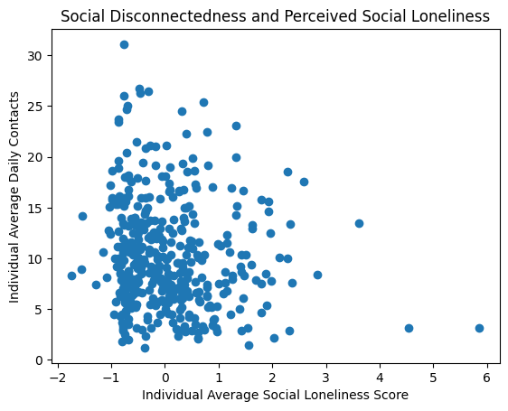

Thank you for your valuable comments and feedback. Please refer to the manuscript for the writing update.
| No. | Comments | Responses | ||||||||||||||||||||||||||||||||||||||||
|---|---|---|---|---|---|---|---|---|---|---|---|---|---|---|---|---|---|---|---|---|---|---|---|---|---|---|---|---|---|---|---|---|---|---|---|---|---|---|---|---|---|---|
| 1 | Does the analysis differ much with and without this approach, could be better as robustness. Could address the issue of up to date social network. |
Thank you for your constructive comments. Yes, the analysis with this approach and an alternative approach show similar estimation results. The objective of the approach is to search for the missing contacts’ social network information from the closest neighbors’ social network surveys. This approach starts from a forward lookup followed by a backward lookup for missed contacts in the current wave of social networks. We also conducted an alternative lookup approach by searching for the missing contacts backward first and then forward, which could work as robustness checks.
In both cases, we borrow the missed contacts’ network features from the closest wave that the contact exists. By doing this, we could have a relatively complete social network. The estimation with an adjusted approach is mostly consistent with earlier estimations: The results suggest that an increase in core number could lead to a decrease in screen time, which is consistent with the original estimation. |
||||||||||||||||||||||||||||||||||||||||
| 2 | “dynamic social network” Actually this definition is not clear. Social networks can be dynamically measured (i.e. they are repeated snapshots). Would these be dynamic? In reality, you are taking a cross-sectional snapshot of a social network and dynamically measuring activation. You actually do not have dynamic social network data. |
Thank you for pointing that out. It sill should be noted that there are two levels of social network features in our study:
It is true that individual’s social network features evolve survey by survey rather than day by day. Nevertheless, our independent variables are the average social network features of the entire cluster of contacts that are activated on a certain day. Depending on which contacts are activated, the characteristics of the activated cluster change on daily level. For example, if a participant activate the following contacts on day t:
The K-core for S on day t is (5+6+7)/3=6. On day t+1, the participant activate the following contacts:
The K-core for S on day t+1 is (7+2+3)/3=4. As we can see, the features of contacts A, B, C, E, H does not change in the current wave of survey. However, the feature of the activated cluster comprised of those contacts sill vary day by day. In general, I can feel that the terminology “dynamic social network” could still be controversial or inaccurate, therefore, I have replaced it with “social network” in the manuscript for now. |
||||||||||||||||||||||||||||||||||||||||
| 3 | ” Moreover, it helps us capture the evolution of one’s contact list and their position in the network over time, which is the common nature of one’s social interaction. “ In some sense, the social network measurement is dynamic both in the evolving structure and the activation. These both need to be highlighted and cleanly separated. |
|||||||||||||||||||||||||||||||||||||||||
| 4 | “smartphone addiction” Unless we define this (super clearly it could be confusing, we may want to use another, less loaded term (e.g. “phone overuse” |
Thanks for your correction, since there is no universal or quantitative definition for smartphone addiction, I have used the term “smartphone overuse” to substitute “smartphone addiction” in the manuscript. | ||||||||||||||||||||||||||||||||||||||||
| 5 | “Our findings reveal that activating contacts who are embraced by the other contacts in one’s social network helps reduce smartphone use. The findings advance the understanding of social engagement from volume to the structure of social networks.” How to interpret these results is still unclear, need to have a coherent explanation of results and why these would or would not be expected. |
Thanks for your comments. I modified the statement as follows by adding an explanation of the results: Our findings reveal that the topology or structure of one’s social network impacts individuals’ behavior. Specifically, activating contacts embraced by the community of one’s social network could motivate broader social engagement, which helps curb smartphone overuse. Our study advances the understanding of social engagement from volume to the structure of social communities. |
||||||||||||||||||||||||||||||||||||||||
| 6 | “……we contextualize the research prob- lems in the context of smartphone addiction, which is an emerging social and technical prob- lem and is broadly thought to be associated with the lack of social engagement.” Here there is this argument again. I’m not sure what we are saying. At points it sounds like we are saying that smartphone addiction is related to social isolation. Alternatively, social isolation could lead to smartphone overuse, both seem credible but the latter is more sensical for our story so we should be clear about this throughout the paper. |
Thank you for your comments. The statement has been corrected as: “……we narrow down the research questions to smartphone overuse, which is an emerging social and technical problem that is broadly thought to be a consequence of social isolation(Zeng et al. 2022)”. |
||||||||||||||||||||||||||||||||||||||||
| 7 | ” ……we measure a social network member’s core number, which measures how well a contact is connected with other contacts and how active the contact’s community is.” This is crucial and should be more clearly described. What about centrality? There is a key theoretical construct here which is measured in different ways. So we should identify the key construct and how the two measures we have differ (and by extension setting up why they may different effects). |
Thank you for your thorough advice. I think the following theoretical construct could be related to our study:
I take “social influence” as the theoretical construct for now. The statement is modified as follow: In addition to the fundamental network metrics such as size and number of edges, we utilize degree centrality and K-core to identify the vital contacts with high social influence in a network that could have the potential to motivate broader social engagement. The former feature captures the degree to which a contact itself is connected to other contacts. Meanwhile, the latter further considers the connectivity degree of the sub-network to which a contact belongs. I wonder if we should identify one theoretical construct for both degree centrality and K-core. Or, should we use two theoretical constructs for degree centrality and K-core separately. |
||||||||||||||||||||||||||||||||||||||||
| 8 | “However, the number of connections of an activated network does not contribute to curbing smartphone use. Moreover, our results suggest that activating contacts in one’s social network can curb smart- phone use.” These seem like opposite results, are they? Is the first result suggesting that network size does not have an effect? More generally, I wonder if we should kick things off with the more basic measures and then lead into the new more comprehensive measures. The story is that social networks are rich constructs with some simpler measures (number of nodes, size, etc.) and some more advanced measures that capture richer dynamics. Part of the contribution is leaning into the richer context and using real time data reveal more insight compared to the simple stuff. Need to tell this story more comprehensively. |
This interpretation is not so clear. Here is the more detailed interpretation of the current results: Our results show that activating contacts with high K-core can significantly reduce smartphone overuse time, with a more substantial reduction effect on non-communicative use than communication-driven use. Specifically, one standard deviation increase in core number leads to a 5.7-minute decrease in non-communication screen and a 5.34% decrease in overuse rate. However, activating contacts with a high degree centrality does not help curb smartphone overuse. The distinction between the effects of the two features suggests that contacts with a high K-core, which are those embedded in a cohesive group, have a stronger capability to motivate social engagement and project social influence. Furthermore, we find that the size of an activated social network reduces non-communicative screen time but increases communicative screen time. The two types of effects offset each other and result in no significant impact on overall screen time. The two types of effects offset each other and result in no significant impact on overall screen time. Moreover, we find that the impact of social network features does not vary with mobile communication level. Our results reveal that once a cluster of social networks is activated, the communication level does not influence the impact of the activated cluster, even though the activation itself is based on communication events. |
||||||||||||||||||||||||||||||||||||||||
| 9 | “There are generally two types of social isolation: social disconnectedness and perceived isolation. Social disconnectedness refers to the status that someone lacks contacts or social con- nections.” These are interesting constructs which waiver in their centrality to the story. Do they correlate with our social network measures, are there other measures that capture these distinctions? |
It is interesting to explore the distinction between social disconnectedness and perceived isolation. In our data, there are three types of perceived loneliness: romantic loneliness, family loneliness and social loneliness. We can use the number of activated contacts per day as a proxy of social disconnectedness. Here is some descriptive results: The correlation between family loneliness and social disconnectedness: The figure suggests that high family loneliness is correlated with more screen time regardless of the number of contacts activated. The correlation between romantic loneliness and social disconnectedness: The figure suggests that low romantic loneliness is correlated with high screen time regardless of the number of contacts activated. The correlation between social loneliness and social disconnectedness:  The figure suggests that high social loneliness is correlated with high screen time when participants’ activated contacts are at bottom 20% or top 20%. |

Thank you for your valuable comments and feedback.
| No. | Comments | Responses |
|---|---|---|
| 1 | It appears to be that those with higher core-number are mostly close friends. Then one could say that the story is actually much simpler: merely engaging with close friends is what matters. Can you argue for using network features, like core-number, against more intuitive metrics such as contact closeness in this context? | Thank you for your constructive comments. We measured the social distance of smartphone users with their contacts, as well as their level of trust in those contacts, which are the common measurement of interpersonal relationships. The estimation of the above two constructs suggest that they do not have significant impact on participants smartphone use behavior. Please refer to Table 5:
|
| 2 | A fundamental assumption is that social interactions mainly occur through calls and messages. Although the author has presented data showing a link between self-reported interaction levels and observed call/message frequencies, this doesn’t establish that calls/messages are the primary channels of interaction. People could have spent more time on other social platforms and offline activities (with the time spent also aligning with the self-reported interaction levels). How do you plan to address these potential unobserved interactions? Or can you justify they don’t affect your results? | This is an important issue that we need to address. Thanks for pointing this out. Indeed, there could be unobservable social engagements that are not based on phone call and message: 1) social interactions on other mobile applications; 2) physical interactions that are not based on phone call or messages. First, for the social interactions happening on other platforms, it is indeed unobservable in our data set. However, based on the market share of the most popular mobile messaging channels, our data covered the leading four channels (Whatsapp, Phone calls, Facebook messager and Texting (SMS): Therefore, we suppose that our data has covered the majority of mobile communication activities. Second, in terms of the unobserved offline social interactions, there could be two categories:
|
| 3 | The implications from your findings are also not clear. The current results show reduced smartphone use when engaging high “core-number” contacts. Does this suggest that one should have more interactions with such contacts to minimize their screen time? But the effect seems to be muted for the heaviest smartphone users, meaning this strategy wouldn’t be effective for those who might be really addicted. | We identified smartphone users who are addicted to smartphone. To the best of knowledge, there is no quantitative definition of smartphone addiction. We define smartphone addiction based on multiple criterias:
We then estimated the probability of addiction with a logit model: \(\begin{align} \ln \left(\frac{\operatorname{Pr}\left(\text { Addiction }_{i t}=1 \mid \boldsymbol{X}_{i t}\right)}{1-\operatorname{Pr}\left(\text { Addiction }_{i t}=1 \mid \boldsymbol{X}_{i t}\right)}\right) &= \nonumber \\ &\quad \beta_{0} + \beta_{1} \cdot \text{Social Network Features}_{it} \nonumber \\ &\quad+ \alpha \cdot X_{it} + \theta_{i} +\lambda_{t} + \varepsilon_{it}\end{align}\) All estimation results show that the increase in core number is associated with a decrease in the likelihood of smartphone addiction. For example: |
| 4 | Does a single interaction by call/text suffice to trigger this effect? Can you provide more thoughts on the results? |
In the first version of this paper, the activation threshold is communication event > 0. However, there could be a situation that the contacts did not respond to the information, which lead to a failed activation. I adjust it as follows: a contact is activated if any of the two conditions is met: 1) the communication event type is a Call; 2) the communication event type is a message (SMS, MMS, or WhatsApp) and there are both ‘outgoing” and’incoming” messages (SMS, MMS, or WhatsApp). The above two conditions could ensure a two-way communication (an effective activation) exists between two smartphone users. This eliminates the possibility of one-way communication: one only sends or receives communication information. Overall, the estimation results are mostly consistent with earlier results after the adjustment. |
| 5 | It could be also interesting to explore how this effect vary by individual’s perceived loneliness, their social interaction level, or maybe the timing of activation (e.g., morning vs night), etc. | The third hypothesis is adjusted as follow: An increase in communication with contacts with a high degree centrality improves the effectiveness of degree centrality in reducing smartphone usage. |
| 6 | Smartphone addiction is measured by duration of smartphone use. But certain usages like seeking information or connecting can be productive. Why not consider defining addiction as screentime over a certain threshold? | Please refer to response 3. |
| 7 | “Activation” of a contact in a social media is determined by a single message or call. Shouldn’t the frequency of interactions be considered? Would a weighted average make more sense here? | In robustness check, we adjust the activtion threshold as two-way communication. Please refer to response 4. |
| 8 | In Figure 5, you handle missing contact information by referencing from the past or future. How often does such missing information happen? Wouldn’t it be more appropriate to rely on the most recent survey only in order to capture the dynamic relationship? | We conducted a lookup operation to search for the missing contacts’ social network information from the closest neighbors’ social network surveys. We also conducted an alternative lookup approach by searching for the missing contacts backward first and then forward.
Both results are consistent with our original analysis: |
| 9 | Following the above point, how did you handle new relationships that emerged between biannual surveys? | Please refer to response 8. |
| 10 | Figure 7 exemplifies social network activation. I’m curious about the repeated communications with a few out-of-network contacts: are these inbound or outbound? If these are mostly inbound with no response or occurred at regular times, it might be more reasonable to classify them as potential ads/promotions and exclude them from analysis. |
|
| 11 | Personality was included as a control. Shouldn’t it remain consistent for an individual? If so, you should drop it from the fixed-effect model. | Personalities are measured based on social surveys so they could change over surveys. Due to the missing information for certain participants, we excluded the information for now. |
| 12 | It’s not necessary to write three functions for total, communication, and non-communication screen time; the model is the same. | Thank you, it is corrected in the manuscript. |
| 13 | Based on the # observations, the unit of analysis seems to be person-week, but in your model and results, “t” indicates day. Please clarify. | Thank you, the structure of the data is individual * day. However, time fixed effect is at the week level (studyweeks), even though our panel data is structured at potentially a more granular (daily) level with date |
| 14 | Your hypothesis 3 is about perceived loneliness but the results are missing. What is the relationship between the perceived loneliness and one’s actual communication pattern? | The third hypothesis is adjusted as follow: An increase in communication with contacts with a high degree centrality improves the effectiveness of degree centrality in reducing smartphone usage. |
| 15 | Please make the tables/figures self-explanatory. For example, in Table 6 it’s unclear which column corresponds to which subsample. In Table 4, please specify the units for each variable. | Thank you, please refer to the manuscript for the recent correction in formats. |